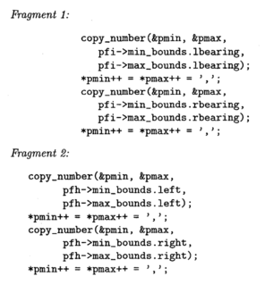

With the occurrence of software duplication and all the negatives it brings, naturally there are methods developed to counter its applications in aid of maintenance and reengineering. In the case of large sized softwares, there are programs designed to find similarities within sections of copied code that is to be exactly the same, or that is the same except for sharing global substitution of names. An example of this being every “x” being changed to y, while keeping the rest of the code intact. A connection of code that is an identical pair is known as an exact match, while altered parameters are called a parameterized match, or p-match. It is also worth mentioning that these detections are text and linebased with Comments and whitespace being ignored. The tools necessary to find all the exact or parameterized matches is are put into these programs, such as main one of this topic by the name of “Dup”. Dup is a program used in detecting cases of sections repeated in code seen in other programs. Dup can be used for many ways such as running lines from two separate software systems to show the applications in line with scanned sections of code that should have their procedures removed of any duplication during the reengineering phase of the system.
Dup is especially useful because it can do a great job of countering a technique used in most cases of software duplication which includes putting copied code with gaps of differing sizes. An example of this type of countermeasure is seen in the figure off to the (right/left). In cases like this for Dup, in addition to having to find any distant sections of code that match, it also needs to find locally repeating sections of structure in which the same short code is done again immediately with changed parameters, with names normally having an ending number. However, if the array were to be used in place of these numbered parameters, the repeated code may also be replaced by a loop. Such sections like this are possible to be cases of automatically generated code by a program generator, but there have also been instances found were situations like this are created by hand from a certain specification in which the language was missing arrays in the structures. If the programmer wants to turn the copies of code into calls for new procedures, the relation compared with the parameters’ names in both sections implies what the proper parameters should be instead for the procedure. In another case, if it seems more practical to keep the duplication function, a profile can be created that details for each line of code where other existing copies are in the system based on the maximum amount of exact or parameterized matches so when a bug happens in one of the copies of the code, the programmer can fix all of the other copies as well.
Whether it be for copyrighted, reengineering or general management purposes, many duplication finders like Dub is a very useful program in ensuring your software is in fit shape to fit the best criterias in proper development. Who knows, it may even even be great use for yourself as well more than you might think.